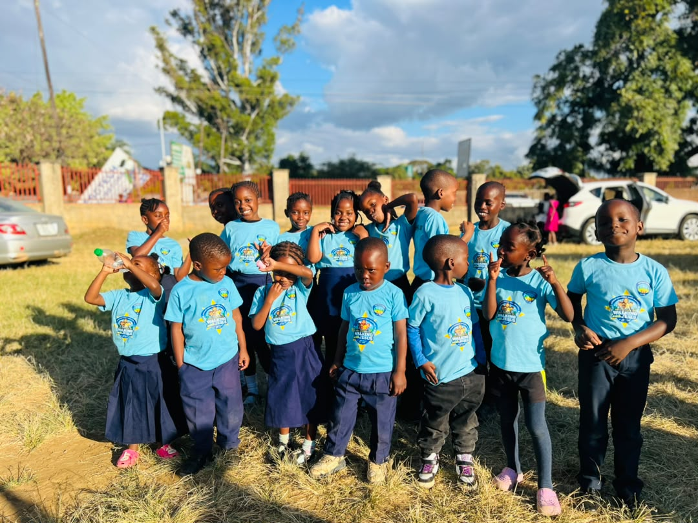

Adventurer Club
"Because Jesus loves me, I can always do my best." — The Adventurer Pledge
Little Hearts on a Big Adventure
A Club Built on Partnership
The Adventurer Club is a Seventh-day Adventist Church ministry for children ages four to nine — from Pre-K through fourth grade. It began in the early 1970s as a small, home-grown program for younger brothers and sisters of Pathfinders who longed to belong to a club of their own, and by 1991 the General Conference had adopted it as a worldwide ministry with its own flag, uniform, and curriculum.
Here at Makeni Central, our Adventurers meet every week to sing, pray, explore nature, earn badges, and — most importantly — grow closer to Jesus. The club is built on a simple idea: church, home, and school working together so that every child grows "in wisdom and stature, and in favour with God and man."

diversity_3Add images/adventurers-story.jpgThe Pledge & the Law
"Because Jesus loves me, I can always do my best."
The Adventurer Pledge
Six Steps of the Adventure
Every Adventurer climbs through six age-based classes, each earning its own sash badge along the way.
Stories from Our Sash
Every badge tells a story. Here are a few from our own Adventurers at Makeni Central.

The Blanket Prayer
Our youngest Little Lambs, with their parents right beside them, tied fleece squares into a small blanket for Brother Phiri, who was unwell at home. Before it left the classroom, every little hand rested on the blanket while their leader prayed. They may be the smallest Adventurers, but they already know how to ask Jesus to comfort someone else.

Busy Hands, Watching Eyes
The Eager Beavers spent a whole Sabbath afternoon sanding and nailing together a little wooden birdhouse for the church garden. Their leader reminded them that God notices even the smallest sparrow — so this term the Beavers decided to notice too, and now check on "their" birdhouse every week to refill the seed.

The Garden the Bees Grew
This term our Busy Bees dug up a forgotten corner behind the church hall and planted a small vegetable garden. Every week they watered it, pulled weeds, and prayed over the seeds. When the first tomatoes ripened, they carried a basket to Sister Mwansa, who lives alone nearby. "We grew these with our own hands," one Busy Bee told her, "because Jesus loves you too."

The Lantern Walk
Our Sunbeams made paper lanterns and, just as the sun went down, walked the churchyard path together, each carrying their own small light. Their leader asked them to name one dark place a light could help — a scared friend, a hard homework problem, a lonely evening. "Your word is a lamp for my feet," she reminded them from Psalm 119, "and Jesus wants you to shine it for others."

One Brick at a Time
When the Builders heard about the new sanctuary going up down the road, they didn't just want to watch it rise — they wanted a hand in it. Each week they've been collecting coins in a jar shaped like a brick, and last Sabbath they marched up front and handed the whole jar to the building fund. "We can't lay real bricks yet," one Builder said, "but we can help pay for them."

A Basket for the Kunda Family
When our oldest Adventurers, the Helping Hands, heard that a family in the congregation had fallen on hard times, they didn't wait to be asked. They packed maize meal, soap, and a hand-written card into a basket and delivered it themselves. "Because Jesus loves me, I can always do my best" isn't just a pledge they recite — for the Kunda family that week, it was a promise kept.
What Adventurers Do
Nature & Camping
Nature walks, family camp-outs, and outdoor games that put God's creation right in little hands.
Crafts & Badges
Hands-on activities and sash awards that turn Bible lessons into things a child can hold and keep.
Family Partnership
Parents and guardians join in every activity — the club is designed as a family journey, not a drop-off.
Community Service
Field trips and service projects that put the Adventurer Law of kindness and helpfulness into practice.
Join the Adventure
Is your child between four and nine years old? Bring them along on a Sabbath — our Adventurer leaders would love to welcome your family into the club.